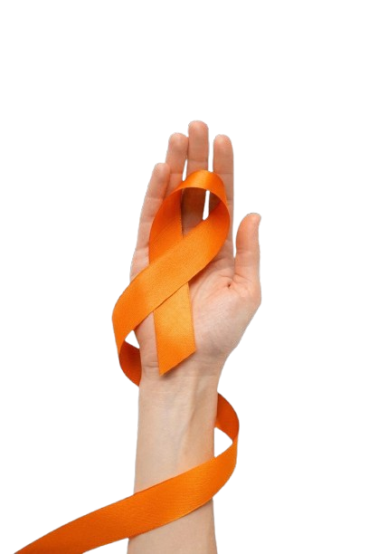

- O Abril Laranja é uma campanha de conscientização dedicada à prevenção dos maus-tratos contra os animais. Essa iniciativa tem como objetivo principal informar a sociedade sobre a importância do respeito, do cuidado e da proteção de todos os seres vivos, sejam eles domésticos ou silvestres. Durante o mês de abril, diversas ações são realizadas por organizações, escolas e grupos de proteção animal, buscando educar a população e incentivar atitudes mais responsáveis em relação aos animais.
A campanha destaca problemas comuns, como o abandono, a violência física, a negligência com alimentação e saúde, além das condições inadequadas de vida. Muitas vezes, esses maus-tratos acontecem por falta de informação ou consciência, o que torna a educação um dos principais pilares do Abril Laranja. Ao compreender melhor as necessidades dos animais, as pessoas podem contribuir para garantir seu bem-estar e evitar situações de sofrimento.
-
Outro ponto importante da campanha é incentivar a denúncia de casos de maus-tratos. Muitas pessoas ainda não sabem que esse tipo de ação é crime e pode ser punido por lei. Por isso, o Abril Laranja também busca orientar a população sobre como agir nessas situações, reforçando a importância de não se omitir.
- Além disso, a campanha promove a adoção responsável, mostrando que ter um animal de estimação exige compromisso, cuidado e responsabilidade ao longo de toda a vida do animal. Dessa forma, o Abril Laranja contribui para a construção de uma sociedade mais consciente, empática e comprometida com a proteção dos animais.

|
- A conscientização sobre os maus-tratos aos animais é fundamental para construir uma sociedade mais justa e responsável. Muitas pessoas ainda não têm plena noção de que atitudes como abandono, agressões ou negligência causam sofrimento intenso aos animais e são consideradas crimes. Por isso, informar e educar a população é um passo essencial para mudar essa realidade e reduzir os casos de violência.
- Quando as pessoas se tornam mais conscientes, passam a agir com mais empatia e responsabilidade, entendendo que os animais também sentem dor, medo e necessidade de cuidado. Isso contribui para práticas mais corretas, como oferecer abrigo adequado, alimentação, cuidados veterinários e atenção. Além disso, a conscientização incentiva a adoção responsável, evitando compras impulsivas e abandonos futuros.
- Outro ponto importante é que uma sociedade informada tende a denunciar mais casos de maus-tratos, ajudando na aplicação das leis e na proteção dos animais. Muitas vezes, a falta de denúncia permite que situações de violência continuem acontecendo sem punição. Ao saber como agir, as pessoas podem fazer a diferença na vida de muitos animais.
- Portanto, a conscientização não apenas protege os animais, mas também fortalece valores como respeito, empatia e responsabilidade. É por meio da informação que se cria um ambiente mais seguro e digno para todos os seres vivos, mostrando que cada atitude individual pode gerar um grande impacto coletivo.

|